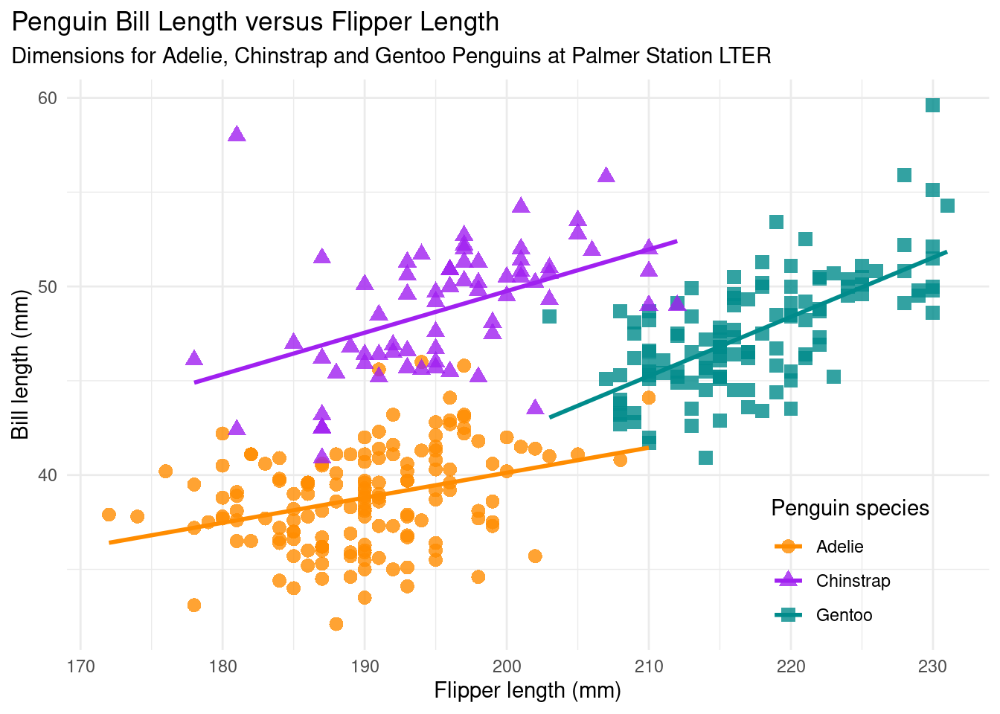

You can install the released version of palmerpenguins from CRAN with:
install.packages("palmerpenguins")
To install the development version from GitHub use:
install.packages("remotes")
remotes::install_github("allisonhorst/palmerpenguins")
OR
remotes::install_github("mohitshrestha/automaton")
Code
# To install the released version from CRAN use:# install.packages("ggplot2")# install.packages("palmerpenguins")# To install the development version from GitHub use:# install.packages("remotes")# remotes::install_github("allisonhorst/palmerpenguins")# remotes::install_github("mohitshrestha/automaton")library(ggplot2)library(palmerpenguins)ggplot2::theme_set(ggplot2::theme_minimal())
Generate Visualizations
Penguin Bill Length versus Flipper Length
Code
flipper_len_bill_len <-ggplot(data = penguins,aes(x = flipper_length_mm,y = bill_length_mm,group = species)) +geom_point(aes(color = species, shape = species),size =3,alpha =0.8) +geom_smooth(method ="lm", se =FALSE, aes(color = species)) +scale_color_manual(values =c("darkorange","purple","cyan4")) +labs(title ="Penguin Bill Length versus Flipper Length",subtitle ="Dimensions for Adelie, Chinstrap and Gentoo Penguins at Palmer Station LTER",x ="Flipper length (mm)",y ="Bill length (mm)",color ="Penguin species",shape ="Penguin species") +theme(legend.position =c(0.85, 0.15),plot.title.position ="plot",plot.caption =element_text(hjust =0, face="italic"),plot.caption.position ="plot")flipper_len_bill_len

Penguin Body Mass versus Flipper Length
Code
ggplot(penguins, aes(x = flipper_length_mm,y = body_mass_g)) +geom_point(aes(color = sex)) +scale_color_manual(values =c("darkorange","cyan4"), na.translate =FALSE) +labs(title ="Penguin Body Mass versus Flipper Length",subtitle ="Dimensions for male and female Adelie, Chinstrap and Gentoo Penguins at Palmer Station LTER",x ="Flipper length (mm)",y ="Body mass (g)",color ="Penguin sex") +theme(legend.position ="bottom",plot.title.position ="plot",plot.caption =element_text(hjust =0, face="italic"),plot.caption.position ="plot") +facet_wrap(~species)
Citation
Code
citation("palmerpenguins")
To cite palmerpenguins in publications use:
Horst AM, Hill AP, Gorman KB (2020). palmerpenguins: Palmer
Archipelago (Antarctica) penguin data. R package version 0.1.0.
https://allisonhorst.github.io/palmerpenguins/. doi:
10.5281/zenodo.3960218.
A BibTeX entry for LaTeX users is
@Manual{,
title = {palmerpenguins: Palmer Archipelago (Antarctica) penguin data},
author = {Allison Marie Horst and Alison Presmanes Hill and Kristen B Gorman},
year = {2020},
note = {R package version 0.1.0},
doi = {10.5281/zenodo.3960218},
url = {https://allisonhorst.github.io/palmerpenguins/},
}